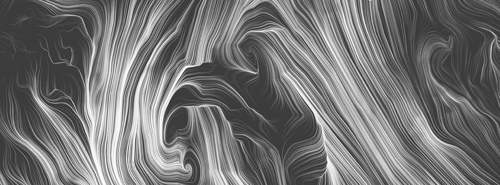

Syllabus

Learning objectives and outcomes
This course is meant to teach students basic concepts in computational generative art, and provide a foundation for creative self-expression via software. Students should come away with an appreciation for the opportunities in using data as a medium, as well as technical and ethical challenges. In addition, they should gain an understanding of the critique processBy the end of the course, students should have:
- Ability to create expressive graphical, interactive applications that can be deployed on the web, using either the p5.js environment or Javascript/HTML
- Ability to participate in the in-person critique process: assessing a composition, articulating useful criticism, and receiving feedback constructively.
- Ability to assess data quality and think critically about how data sets have been constructed and used. Ability to clean and prepare data.
- Familiarity with key concepts and themes of generative and data-driven artwork
Course Components
This is a studio course, following the tradition in design and art schools of learning by doing, and learning by critique. Given the nature of the class, students are likely to bring widely different backgrounds and perspectives to bear on the material; our teaching philosophy is that we want students to uncover their own strengths, and use those as building blocks for learning material that they may not otherwise have confidence to tackle.In class
The general structure of the class will be to introduce a new topic on Thursday, with a related homework exercise due the following Tuesday. We will spend much of that Tuesday on an in-class critique and discussion of the group's work.
Lectures Class lectures will introduce central concepts related to software-based art and data visualization. As a class, we will examine, analyze, and critique a variety of contemporary and historical pieces based on data and algorithms. We'll also spend time on craft: the technicalities of graphical coding and working with data.Critiques A core element of the class will be structured critiques of homework exercises. To be clear, we don't mean "critique" in the sense of making negative comments. Instead, a critique is a rigorous and intellectually curious examination of the work. Engaging in this process is not just an excellent way to deepen understanding of the subject at hand, but builds skills that are helpful in many other contexts.
Homework
Weekly compositions. Weekly homework assignments will usually consist of a series of prompts. Students will create a draft composition for each prompt, along with a brief paragraph describing their intentions. We'll go over these drafts in a group class critique. The list below should give a sense of what will be required, but during the semester we may modify some of these assignments to better fit class skills and interests.
Final project. Students will be expected to create a final project which synthesizes the main themes of the course and demonstrates mastery of the skills taught in lectures. The goal will be to make a rich, complete work that tells a story around data. The last two weeks of the course will be devoted to creating prototypes and drafts of the final project.
Topics covered
This is a conceptual list of topics. Please see the course schedule for precise dates of lectures, homework, etc.
Introduction
- Lecture topics Generative art. History and examples. The p5.js environment. Drawing on screen. Publishing a composition on the web. Slides from lecture 1
-
Reading:
- All the "critique" readings on the resources page.
- Introductory material on the p5.js environment: P5.js Getting Started, P5.js Overview, and Active Drawing
-
Homework 1
Please use the OpenProcessing CS73 class environment for this assignment. If you have not yet joined the class site, please see Canvas for instructions.- Create a sketch, on the class OpenProcessing site, whose output depends on your input in some way (mouse, keyboard, however you like). You may use an example sketch from the OpenProcessing site as a base. There is a collection of especially relevant example programs on the class site.
- Use this as an artistic tool: practice creating (abstract) images with it! In class, be prepared to demo your tool.
- Next class (Tuesday, Sept. 5) we’ll have a critique of the tools Think in advance: What did you learn about the “medium” you created? How did it guide the images you made with it? Where would you locate the “art” in the final results?
- Submit your sketch to the "Homework #1" collection
- PLEASE NOTE: "Drawing tool" does not mean recreating Photoshop :) The goal is to create a very simple (but interesting!) way for a viewer to make images, and to practice putting a sketch up on this site.
Repetition, Systems, and Scale
- Lecture topics The power of repetition. Creating wholes from parts. How do you create a sense of scale on a laptop? Slides from Lecture 2.
-
Useful reading:
- Look at the MassMOCA Sol LeWitt exhibit site and watch this video about wall drawings.
- See Code as a Creative Medium pp. 379-387 for inspiration. Read this p5.js tutorial on looping
- Look through early chapters of Getting Started with p5.js (see Library Reserves on Canvas).
-
Homework 2: Four sketches total, exploring collections and scale.
- Multiples: 1 sketch (submit to "homework 2 multiples" collection) Write a function to draw an object of some sort Create a grid of versions (between 10-100) that explores variations in the objects The order of items should not be random: it should reflect a deliberate choice.
-
Scale: 3 sketches (submit to "homework 2 scale" collection)
Choose an emotion or feeling. Create one series of three grayscale compositions, each expressing that same emotion. Don’t reveal what the emotion is, we’ll see if viewers can guess.
- Composition A has 5 lines
- Composition B has 100 lines
- Composition C has 100,000 lines
- Please submit all sketches to the appropriate collections on OpenProcessing; Please ALSO submit URLs of your sketches to Canvas. This allows us to grade and comment easily on the assignment in Canvas.
Color
- Lecture topics Color from an artistic and scientific perspective. Slides from Lecture 3.
-
Optional Reading:
- Josef Albers: interaction of color chapters IV, V, XXII. You should have access via Harvard to this material.
- Color scales: Wilke on color scales
- Color in P5.js
-
Homework 3: Color and composition (two sketches). See Canvas site for due dates. We're also asking you to comment on some of your peers' work; see Canvas for details.
-
Color & depth (1 sketch). Create a composition where:
- Use color to create a sense of depth (foreground and background). Think about what color palette can help you achieve this–no random functions allowed.
- You have drawn on every pixel, without using the background() command. This ensures that every pixels is a deliberate choice.
- There is a clear focal point to your composition that is created by color.
- Music Visual Portrait (1 sketch). For one piece of music (from the list below, links go to YouTube where you can listen to the pieces) create a visual "portrait" that captures the mood of the piece. Color should be a primary element of the composition.
-
Color & depth (1 sketch). Create a composition where:
Animation: Time, change, and motion
- Lecture topics Parametrized position. Simple Javascript objects; particle animations. Traditional animation and its relation to computer graphics. Slides from Lecture 4
-
Reading:
- See Code as a Creative Medium pp. 413-416 for inspiration.
- Principles of Traditional Animation Applied to 3D Computer Animation, Lasseter.
- P5.js Classes and objects
- P5.js Animation dynamics
-
Homework 4: Create an abstract clock.
- It must reflect the current time.
- You may not use numerals.
- See the Canvas site for details on how to submit.
Interaction
- Lecture topics Interactivity. Mouse, keyboard, sensors. Feedback and the "feel" of interactivity. Slides from Interaction Lecture
-
Reading:
- p5.js interactivity tutorial.
- Code As A Creative Medium, p. 161, Time and Interactivity.
-
Homework 5: Make a simple game. See Canvas site for details on how to submit.
- The game should last no more than 30 seconds.
- It should have a score, and the goal is to get the highest score possible.
- The game must be playable without you personally having to demo or explain it. You include written instructions in the game, if you wish.
- Points for fun, style, or humor
Data
- Lecture topics What do we mean by data? Data in today's society. Data ethics. Critical perspectives on data. Technical view of data: Excel / Google Sheets, Libraries to read data in p5.js. Readings from Living in Data and Design for Information. Slides from the lecture.
-
Homework 6:
- Sketch:
- Find a public data set that interests you
- Upload a version of the data to an OpenProcessing sketch
- Create a “color grid” visualization of the data. This must be an N x M grid where:
- N, M >= 1
- Grid rows and columns do not have to be the same sizes
- Rectangles in the grid may be different colors
- Animation is allowed, but not necessary
- All visual variables–colors, sizes, or animation–must depend on the data
-
Technical requirements:
- The sketch must load immediately (please don’t use a huge data set, or if you do, make sure it’s performant.)
- Please put the URL of the data source in a comment on the first line of your code so we can access it
- Please describe the mapping between data and visuals in comments at the beginning of the program
-
Goals
- The mapping between numbers and colors / sizes must make sense: low, middle, and high numbers should look clearly different
- The sketch must reflect something you find interesting about the data
- Sketch:
Visually representing data
- Lecture topics Visually encoding data. Slides from lecture
-
Homework 7:
Create a visualization that reveals something that will surprise and interest the class.
- Your work will be assessed on two criteria:
- How surprising and interesting your revelation is
- How clearly you have presented the data: No one should have to make guesses about what you are communicating. (In our critique, people will give comments first, before you talk.)
-
Things to think about:
- Is the viewer’s attention drawn to the relevant, surprising parts of the data set?
- Labels, colors, etc. should be intentional
- Your work will be assessed on two criteria:
Interacting with data
- Lecture topics Zooming, filtering, multiple views and perspectives. Lecture slides.
-
Homework 8: An interactive visualization that shows a data set from multiple perspectives.
- Interactivity can be zooming, filtering, or something else entirely
- Seeing a different perspective should shift the viewer’s understanding of the data
- Your project should have an artistic goal, for example:
- Data: why is your data choice artistic? Is your data provocative in some way? Is it unexpected or funny?
- Visualization technique: are you going beyond the obvious, infographics charts? How does your technique set a mood or augment what we see in the data?
- Expressiveness: Does your piece convey a message that matters to you? Are you making that message matter to the viewer?
Emotion in visualization
- Lecture topics Role of emotion in visualization. Rhetorical aspects of data presentation. Readings from Ignazio & Klein, Data Feminism.
-
Homework:
Create a data visualization sketch that is designed to evoke an emotional reaction. Your piece should have two parts: an interactive p5.js sketch, and a p5.js sketch that can be printed out. This will be a two-week assignment, with the following pieces due:
- Tuesday, Nov. 1: A rough version of interactive + print sketch. (Graded pass/fail: did you bring some sort of rough draft? Did you choose a dataset?) Class will be a critique / feedback session about ideas for the final version
- Monday, Nov. 7: Final version of interactive sketch
- Tuesday, Nov. 8: Bring print sketch
Time and history (And possibly one more lecture, TBD)
- Lecture topics Time-based visualization with animation. Reading: Online p5.js documentation.
-
Homework 10: Three data visualizations that use animation to represent time, at three different scales. You may use different data sets for each composition.
- One second of real time represents one year of data time
- One second of real time represents one month of data time
- One second of real time represents one second of data time
Final project
- An assignment that brings together the threads of the course: a complete, interactive artistic visualization. Students will create a draft, show to the class in a critique, and then create a further iteration based on the critique. The precise details will be released midway through the course, as we get a sense of student skills and interest.